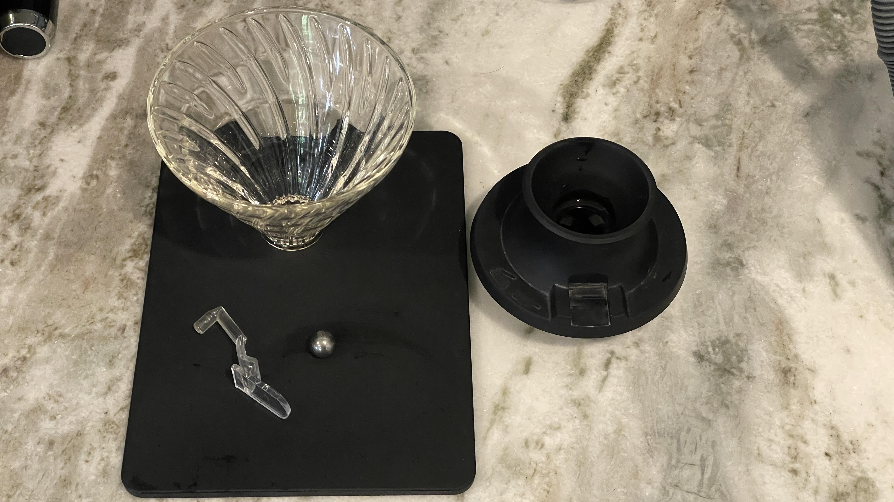

It takes everything people love about a classic pour-over and removes one of its biggest limitations: you're no longer locked into a single brewing style.
With the Hario Switch, you can brew using percolation, immersion, or a hybrid of both, all in the same cup.
That flexibility changes the game in a way that's hard to overstate.
What Makes the Hario Switch Different
At its core, the Switch is built on the familiar V60 design, but with one critical addition: a valve at the base that lets you control when water flows through the coffee bed.
- Valve open = traditional pour-over (percolation)
- Valve closed = steeping like a French press (immersion)
- Open and close mid-brew = hybrid extraction
That last one is where things get interesting. You can start with immersion to build body and sweetness, then open the valve to finish with clarity and brightness. Or flip it the other way and highlight acidity first, then round it out. You're not just brewing coffee — you're actively shaping the cup.

Flavor Control: Where It Really Shines
This brewer gives you control over what flavors stand out and which ones take a back seat.
- Want bright, acidic notes? Lean into percolation.
- Want body, sweetness, and depth? Use immersion.
- Want both? Combine them in one brew.
Instead of being stuck with whatever your method gives you, you can fine-tune the result depending on the beans in front of you. That's huge, especially if you're reviewing coffee or trying to really understand what a roast has to offer.
Hario Switch vs. V60
If you've used a V60, this will feel immediately familiar, but more capable.
| V60 | Switch | |
|---|---|---|
| Clarity | High | High |
| Body | Light to medium | Adjustable |
| Brewing Methods | Percolation only | Percolation, immersion, hybrid |
| Technique Sensitivity | High | More forgiving |
| Consistency | Requires practice | Easier to dial in |
The Switch basically removes the "one-lane road" problem of the V60. You still get that signature clarity, but now you can layer in body and sweetness whenever you want.
Hario Switch vs. AeroPress
The AeroPress has built its reputation on versatility, and for good reason. But the Switch competes in a different way.
AeroPress
- Immersion-focused
- Can mimic espresso-style coffee
- Highly portable
- Slightly compressed flavor profile
Switch
- Better clarity and separation of flavors
- More control over extraction phases
- Larger brew capacity
- Less "pressurized" character
If the AeroPress is about convenience and experimentation, the Switch is about precision and flavor clarity.
Hario Switch vs. French Press
This is where the difference becomes obvious fast.
French Press
- Heavy body
- Oils and fines in the cup
- Muted acidity
- Less clarity
Switch (Immersion Mode)
- Similar body potential
- Much cleaner cup thanks to paper filter
- Better flavor separation
- No sludge at the bottom
You get the richness of immersion brewing without sacrificing clarity or dealing with sediment. That alone makes it a strong upgrade for a lot of people.
Hario Switch vs. Espresso
Let's be real — this isn't replacing espresso. But it does get you flavors and brightness you just don't get with a full bodied espresso. And that's not even taking into account the highlights of running the lighter or darker roast profiles you choose to input.
Espresso
- High pressure extraction
- Intense, concentrated flavors
- Fast brew time
- Requires specialized equipment
Switch
- No pressure, but high control
- Can highlight similar flavor notes with the right technique
- More nuanced and less intense
- Way more accessible
Think of it like this: espresso punches you with flavor, the Switch lets you dissect it.
Daily Use
Where the Switch really wins is in day-to-day brewing. You're not locked into one method. One morning you can go full immersion for a heavier, comforting cup. The next, you can run a bright, clean pour-over. Or you can split the difference and experiment mid-brew.
It also smooths out inconsistency. Bad pour technique that would ruin a V60? The immersion option gives you a safety net. That flexibility makes it easier to get a good cup, and a lot easier to chase a great one.
The Hario Switch isn't just a variation on the V60 — it's a smarter, more capable evolution of it. It gives you more control over flavor, more consistency, more ways to experiment, and ultimately, better coffee. If you're serious about pour-over, this isn't optional gear. It's the next step. And once you start switching between immersion and percolation in the same brew, going back to a standard dripper feels limiting in a way you didn't notice before.